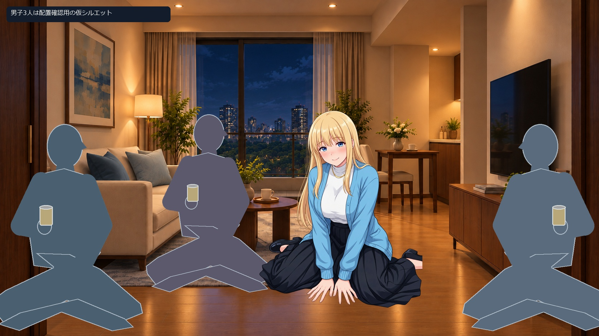

宅飲み：サークル男子3人に囲まれて飲む
既存の「酔い4.png」と「酔い1.png」をそのまま再利用した、床座りの3場面です。男性は前の指定に合わせた別レイヤーの仮シルエット。全員20歳以上という制作上の仮条件です。新しい人物AI画像は生成していません。
3場面比較元画像・配置・保全確認前の宅飲み一覧
男子3人の輪で、缶を持って一杯

そんなに見なくても、ちゃんと飲んでるって。
左右の男子が話を振り、奥の一人が相槌を打つ。ヒロインは缶を持って床座り。男性との接触は描き込まない。
全体 / 男性なしで比較 / ヒロイン透過PNG
話題の中心になって、つい笑う

待って、そっちも喋るから何の話かわかんない。
三方から話しかけられる賑やかな配置。01より間隔を詰めた比較で、身体接触・飲ませる行為は含めていない。
全体 / 男性なしで比較 / ヒロイン透過PNG
少し落ち着いて、聞き役になる

うん、聞いてる。それで、どうなったの？
缶を置いた後の会話を想定し、既存の両手を床についた座り姿を使用。酔いが進んだ差分や口・目の新規変更ではない。
全体 / 男性なしで比較 / ヒロイン透過PNG
続きの場面：宅飲み終盤に眠る／トイレで吐き気に耐える
場面のつなぎ方
最初は全員の会話へ参加 → 左右から褒められたり話を振られて、話題の中心になる → 缶を置いて少し落ち着き、誰の話に耳を傾けるかへ。人物の向き・相手への視線の正確な一致は、今回の既存画像だけでは作り分けていません。
褒められたときの高揚、相手を信頼する気持ち、主人公から見た距離感は別の変化として扱う案です。台詞・分岐は未実装。
独立レイヤー
缶を持つヒロイン / 聞き役のヒロイン / 男子A 仮PNG / 男子B 仮PNG / 男子C 仮PNG